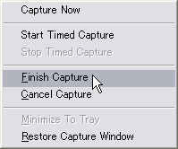
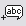

株式会社 アイプランニング
Towa Edogawabashi building 8F
Yamabuki-cho 347
Shinjuku-ku Tokyo
Phone: 03-5225-1147
画面をFlashムービーとして記録し、チュートリアルやプレゼンテーションを作成することができるWinkを使って、簡単な画面操作デモを作ってみましょう。
WinkはDebugModeで開発されている、無料のFlashプレゼンテーション作成ツールです。
特徴
・ プレゼンテーションやチュートリアルを作成することができます。
・ 作成したプレゼンテーションはFlash形式で出力できます。
・ ボタン、フキダシ、テキストボックスなど、多彩なコントロールを使うことができます。
・ マウスの軌跡も記録されます。
・ 音声を録音することができます。
・ Windows版、Linux版が用意されています。
・ Html, PDF, PostScript出力にも対応しています。
日本語対応について
海外のソフトですので、日本語対応に不十分な点があります。
テキストエリアにおいて、カーソル移動やバックスペースにバグがあり、
日本語入力中に文字化けを起こすことがあります。
本文を書くのは別途テキストエディタなどで行い、ペーストで入力したほうがよいでしょう。
使用方法
いろいろな機能を備えているWinkですが、
まず、簡単なプレゼンテーションを作成してみましょう。
例は、画像編集ツール「Paint.NET」を使って、ロゴを作成する方法です。
録画
まずは、録画してみましょう。
１．Winkを起動し、[File]→[New]を選択します。
２．今回はアクティブウィンドウだけをキャプチャしたいので、Windowを選択します。
（標準ではキャプチャ先がScreenになっています）
３．[Choose]ボタンを押し、キャプチャ先のウィンドウをポインタで選択します。
４．[OK]ボタンを押すと、上図のようなウィンドウが開きます。
ホットキーが表示されていますので、覚えてください。
Timed capturesは指定した時間ごとにスクリーンショットを撮るモードです。
標準では1/4秒に一回撮影するため、出力されるデータ容量は大きくなります。
Input-driven capturesは、キー入力・マウス入力があった瞬間のみ撮影しますので、
データ容量はコンパクトになります。
通常はInput-driven captures
を使うと良いでしょう。
５．ホットキーを覚えたら、[MinimizeTo Tray]を押してWinkを最小化してください。
６．撮影の準備ができたら、Input-drivencapturesのホットキーを押して開始します。（標準ではAlt+Pause）、
７．撮影を終了するには、ホットキーをもう一度押します。(標準ではAlt+Pause)
８．終了後、最小化されているWinkのアイコン
を右クリックし、 [Finish Capture]を選択してください。

すると、下図のように、撮影されたスクリーンショットが時系列で並びます。
調整は後にして、早速Flash形式で出力してプレビューしましょう。
８．メニューバーから[Project]→[Render(F7)]を選択し、Flashを出力します。
９． [Project]→[View Rendered Output(F8)]を選択してください。
ブラウザが立ち上がり、Flashが再生されるはずです。
出力例
（このデモは、Paint.NETでWet Floor Effectを作る工程を録画したものです）
若干表示スピードが速すぎるかもしれません。
要所で一時停止させ、ユーザのペースでデモを進められるよう改良しましょう。
フレーム一覧（時間順に左から並んでいます）
１．フレーム一覧から一時停止したいフレームを選択してください。
２．画面右側のProperties欄より
[Add Next Button]を選択し、選択したフレームにNextButtonを追加します。
Next Buttonをフレームに追加すると、そこで自動的に一時停止します。
３．[Project]→[Render(F7)]でFlashを出力します。
４．[Project]→[View Rendered Output(F8)]を押して、一時停止を確認してください。
吹き出しを入れる
解説がほしいところです。
１．先ほどNext Buttonを設置したフレームを選択してください。
（下部に矢印が付いているはずです）
２．
AddTextboxを選択します。
３．解説文を記入し、保存ボタンを押して編集を終了します。
４．作成したテキストを選択し、Propertiesより
[ChooseCallout]を選択します。
５．以下のような画面が開きますので、[3DBox]→[Yellow]→[Rounded]を選択して[OK]を押してください。
６．矢印やボックスの位置を調整してください。
同様に、他の一時停止するフレームにも説明を追加していってください。
「最初から再生」ボタンをつける
１．最後のフレームを選択し、
[AddGoto Frame Button]を選択します。
２．Choose Target Frameウィンドウが出ますので、フレーム1を選択して[OK]を押してください。
３． ボタンがフレームに挿入されます。
ボタンがフレームに挿入されます。
ユーザがこのボタンを押すと、プレゼンテーションの最初から再生されます。
もちろん、フレーム1以外を選択することで、好きな位置から再生させることができます。
以上で、簡単なプレゼンテーションを作成することができました。
アイプランニング技術情報
技術情報TOPページ
参考サイト
プログラマ募集中・・・
お客さまの立場に立ってモノが作れる判断力、企画力、コンサルティング能力を磨きたくはありませんか？プログラム能力は、プロジェクトを通じて自然と能力があがるようなシステムになっています。初心者プログラマであっても３年程度で、その能力は初心者だったとは思えないくらいのスキルとなっています。
これは、「最初は誰でも初心者だ」という教育方針があるため、また、多くの社員が入社して初めてプログラミングにふれたという経験があるために自分のつまづき体験や、成功体験を含めた教育がなされているからなのです。
このようにアイプランニングでは、社員１人ひとりの個性と人間性を重視し、スキルにあったマンツーマン教育であなたを一人前のエンジニアへと成長させていきます。 それは誠実なスタッフが集まっているからこそ、どんなお客様からも信頼される企業に成長できるから。私たちはそう考えています。
プログラマを目指して会社に入ったものの、思った通りの仕事をさせてもらえなかったと思っている人、教育システムが十分でなかったためにスキルが身に付いていないと思っている人も気軽にご応募ください。パソコンのスキルに自信のない方でも、マンツーマンの研修制度で一人前に成長できるフィールドを整えておりますので安心してご応募くださいね。
知識だけでなく本当の開発力が身につく環境でのシステム開発でみつかる『やりがい』はもちろん、プライベートでも今までになかった充実感が得られますよ。